For Caramel
| 80g | 15ml |
|---|---|
| SUGAR | WATER |
For Pudding
| 6* | 500ml | 90g | 200g | 1 tsp |
|---|---|---|---|---|
| EGGS | MILK | SUGAR | HEAVY CREAM |
VANILLA CREAM |
*3 used as whole & 3 used only for yolks
For Caramel
1. Add 80g of sugar along with 15ml of water into a small saucepan.
2. Have the ingredients under low heat since low heat will make the sugar crystalize easier.
3. Pour caramel into molds.
4. Have three eggs separated their yolk and the white.
5. Have the 3 yolks stirred with another 3 whole eggs until they combine together.
6. In a pot, add 500ml of milk, 90g of sugar, and 200g of heavy cream.
7. Set the pot on medium heat and stir the mixture constantly to dissolve sugar and to prevent the milk from burning.
8. Heat the mixture until you see foaming forming at the edge. Do not boil it!
9. Add the mixture into the egg mixture previously made. As you pour the milk into the eggs, do it gradually and gently mix.
10. Add 1 tsp of vanilla extract into the mixture.
11. Strain the mixture to remove unmixed eggwhite.
12. Pour the mixture into the molds where caramels are hardened.
13. Put the molds in a deep tray and fill 2/3 of the tray with boiling water.
14. Bake the pudding at 150°C for 40-50 minutes.
15. After taking them out from the oven, put them in the fridge for 3 - 4 hours to make them solid.
16. Enjoy!
 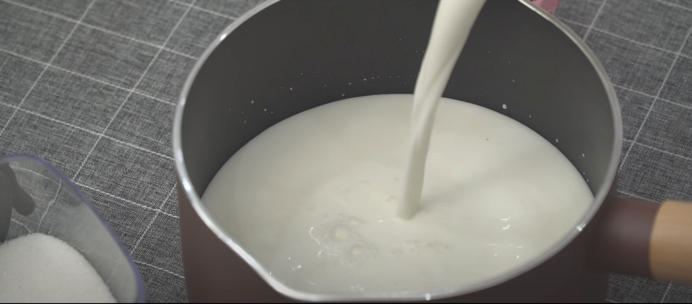
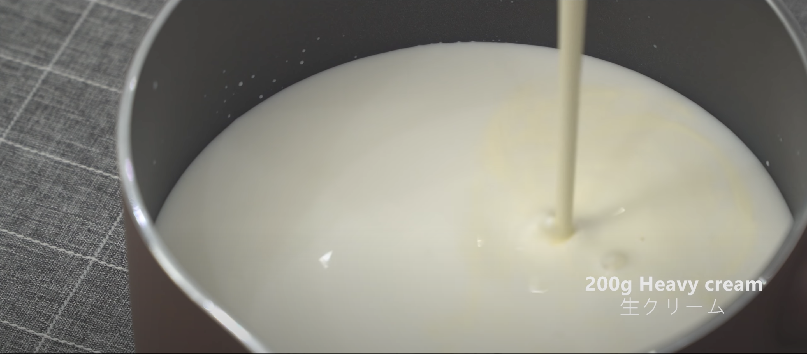
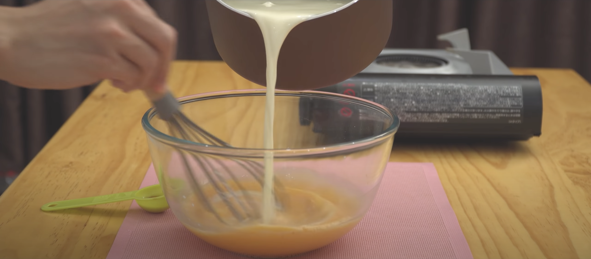
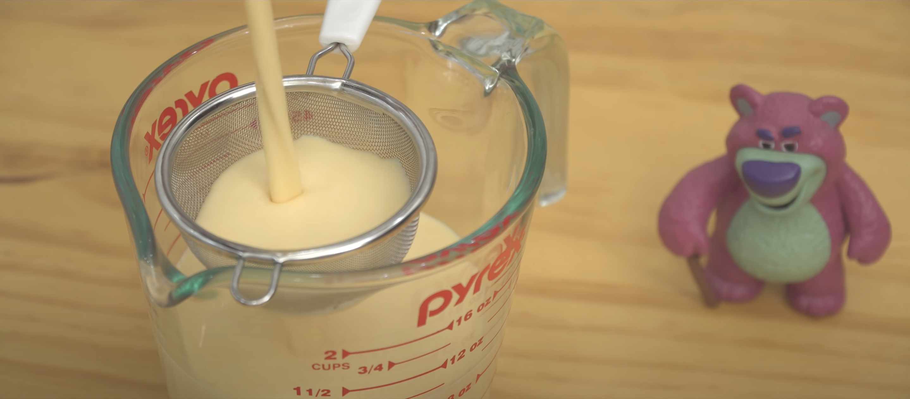
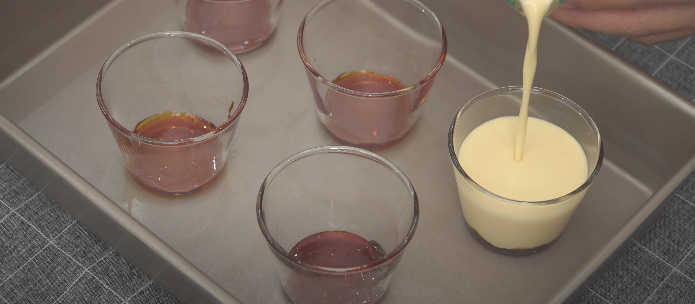
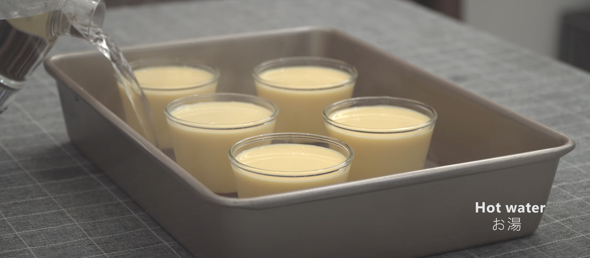
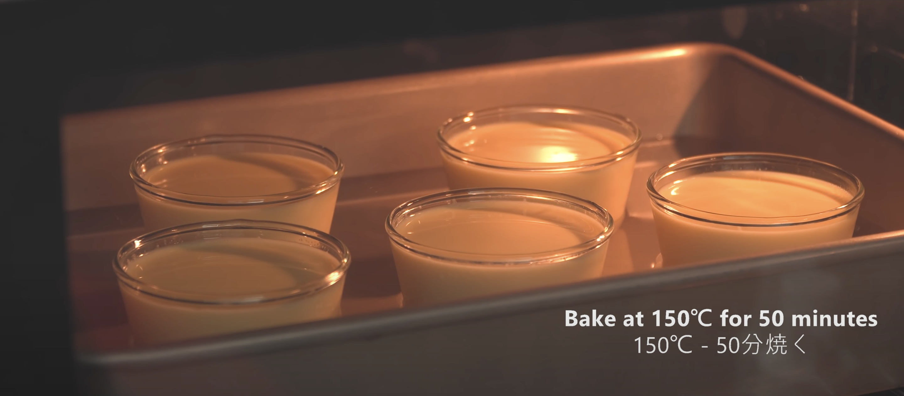
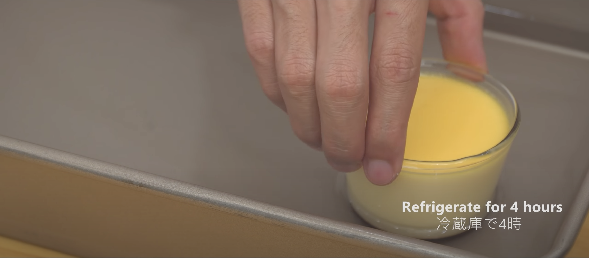
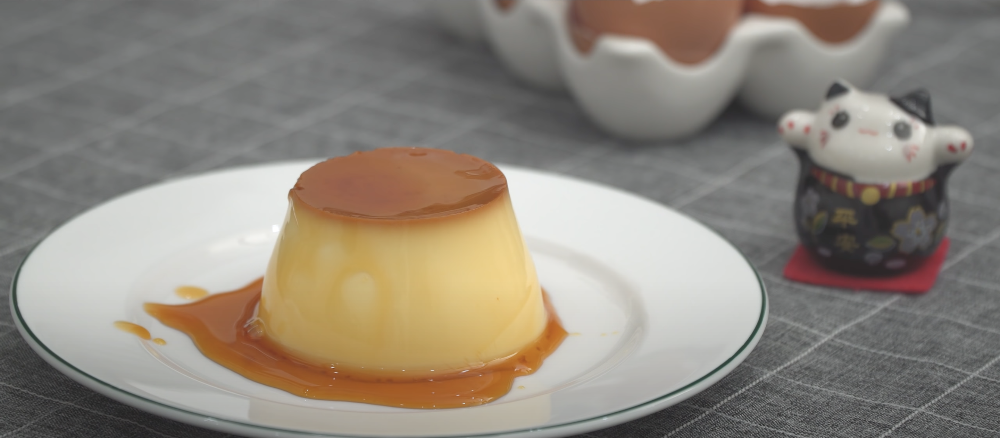
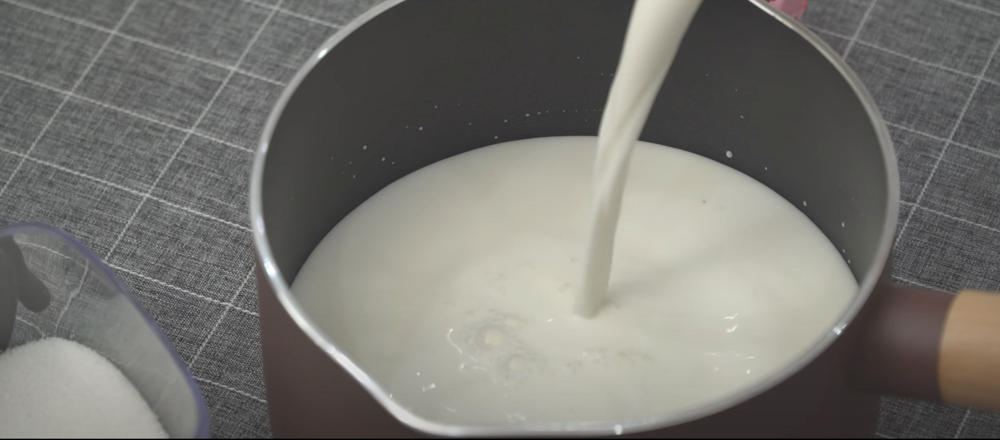
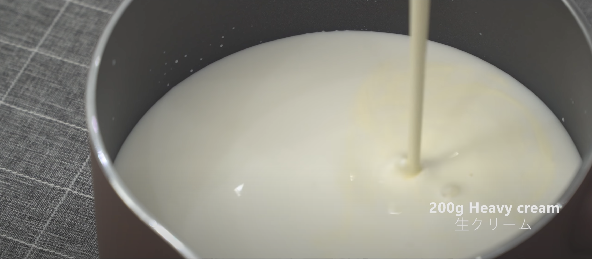
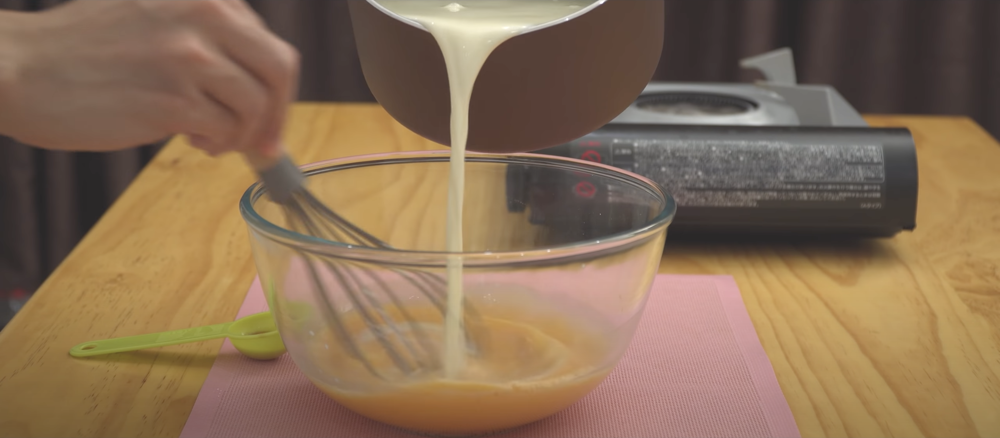
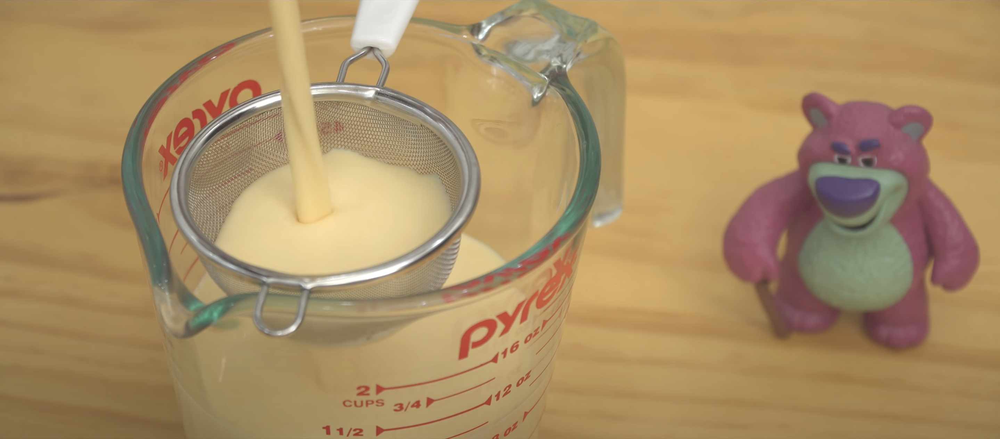
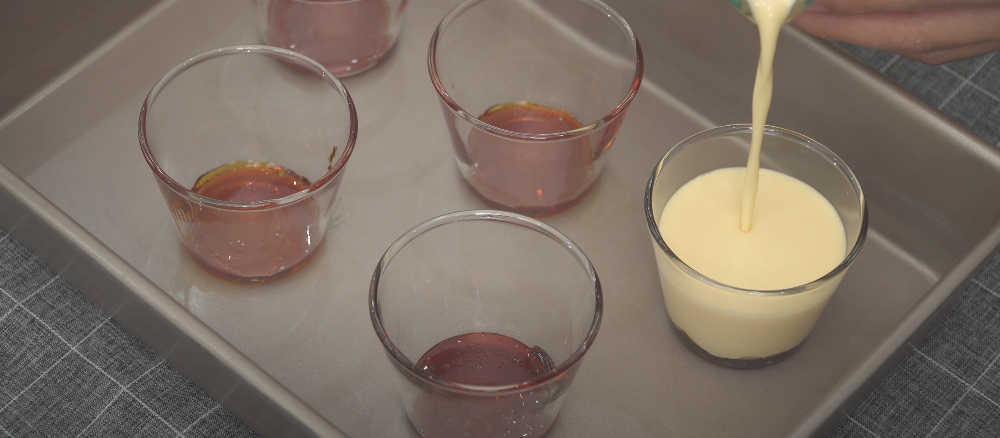
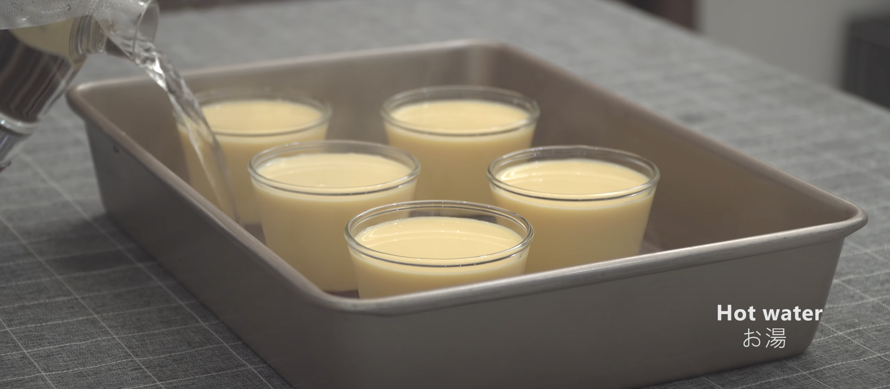
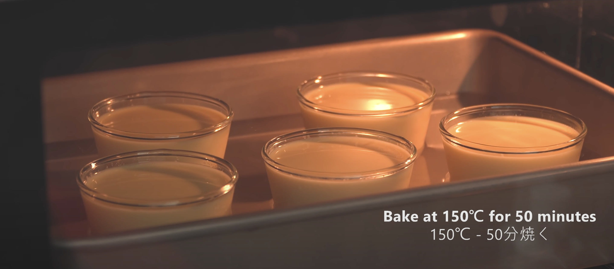
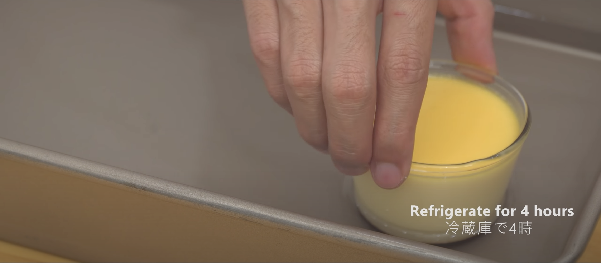
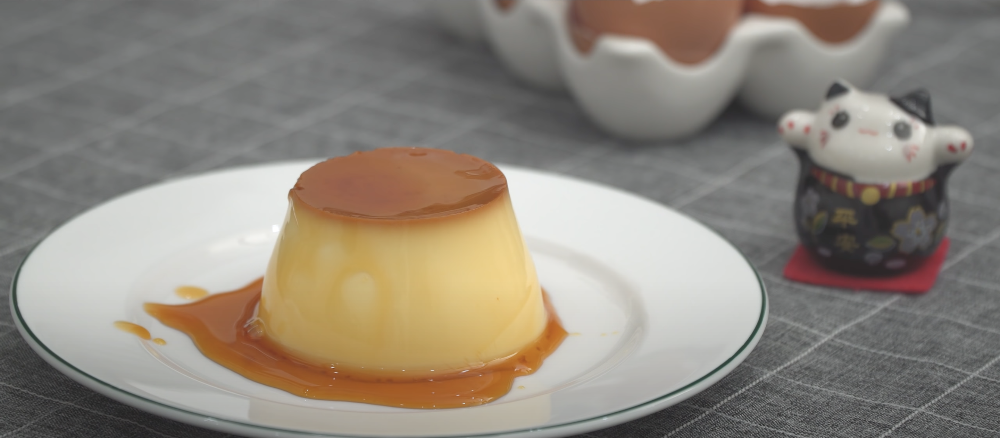